16. Time-flip proposal: Time-constant and time-variable shifts¶
Note: The time-flip proposal is still being tested for reliability, so it is currently turned off in the template and example control files. It is available but is not the default. It is currently under development.
BAMM 2.0 introduces the concept of the “time-flip” proposal. Previously, the default model in BAMM assumed that all shift events in BAMM led to a distinct time-varying speciation (or phenotypic evolution) process. A time-variable shift event models speciation rate as
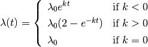
where  is the initial speciation rate,
is the initial speciation rate,
 is the rate parameter for the speciation rate,
and
is the rate parameter for the speciation rate,
and  is the time since the shift event began.
is the time since the shift event began.
We have found that this default assumption can lead to biased inference on speciation (or phenotypic evolutionary rates) in some areas of parameter space. In BAMM 2.0, we do not force rate shift events to be time-varying (as in BAMM 1.0) or constant through time (as in MEDUSA). Rather, we allow diversification submodels to “flip” between time-constant and time-variable rate modes. With this formulation, rate shifts will lead to a constant-rate diversification process unless the data contains sufficient evidence for temporally varying macroevolutionary rate dynamics. A given rate partition in the data can toggle between time-varying and constant-rate models in proportion to the posterior probability that the true process includes rate variation through time. We have found that this model substantially improves the performance of BAMM.
The mechanics of the updated BAMM model entail the concept of a “time-flip” proposal, which flips the time mode of a randomly-chosen shift event from/to time-variable and time-constant modes. A time-constant shift event models speciation as

where  is the constant speciation rate.
With this model, the bias in the initial speciation rate is reduced
because it is not controlled by a separate parameter ().
Instead, the entire speciation rate across the tree is controlled
by a single parameter ().
is the constant speciation rate.
With this model, the bias in the initial speciation rate is reduced
because it is not controlled by a separate parameter ().
Instead, the entire speciation rate across the tree is controlled
by a single parameter ().
Because the rate function is the same for both the diversification model
() and the phenotypic evolution model ( ),
this discussion will focus on the diversification model.
),
this discussion will focus on the diversification model.
16.1. Calculation of parameters after a time-flip¶
When flipping between time-constant and time-variable modes, the rate function parameters are modified such that the mean speciation rate through time is the same for both modes (the time starts at the event location and ends at the tip of the tree).
If the chosen shift event is time-variable and the proposal to flip the mode to time-constant is accepted, then the new speciation rate is set to the mean value of the old speciation rate (calculated from the time the event started until the tip of the tree):

where  is the time elapsed since the beginning of the shift event.
The solution to this integral is
is the time elapsed since the beginning of the shift event.
The solution to this integral is
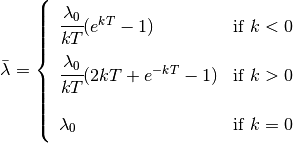
If the chosen shift event is time-constant and the proposal to flip
the mode to time-variable is accepted, then the parameter is chosen
from its prior distribution. The 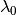 parameter
is calculated from the mean (above equation).
Solving for gives
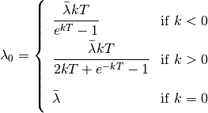
where  is taken from the speciation rate
for the time-constant event.
is taken from the speciation rate
for the time-constant event.
16.2. Acceptance probability for a time-flip proposal¶
The acceptance probability for a time-flip proposal from a time-constant event to a time-variable event is
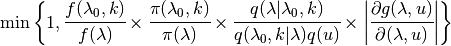
where 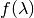 and 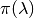
are the posterior and prior probabilities for the time-contant event,
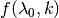 and 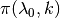
are the posterior and prior probabilities for the time-variable event,
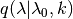 is the probability of proposing
a move to parameter given that the current
parameters are and ,
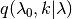 is the probability of the reverse move,
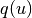 is the probability density of the random variable  , and
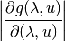
is the determinant of the Jacobian matrix for the transition from a
time-constant event to a time-variable event,
using the mapping function
, and
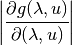
is the determinant of the Jacobian matrix for the transition from a
time-constant event to a time-variable event,
using the mapping function  :
:
![\left[ \begin{array}{c}
\lambda_0 \\
k
\end{array} \right] =
g(\lambda, u) =
\left[ \begin{array}{c}
g_1(\lambda, u) \\
g_2(\lambda, u)
\end{array} \right]](_images/math/5365d7b2f7a0e34fc46ca5caf0efbebec2a88cd5.png)
where
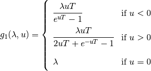
and 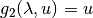.
The value is a random number taken from the prior distribution
of .
The determinant of the Jacobian matrix is therefore
![\left| \cfrac{\partial g(\lambda, u)}{\partial (\lambda, u)} \right| =
\renewcommand\arraystretch{2.3}
\left| \begin{array}{cc}
\cfrac{\partial g_1(\lambda, u)}{\partial \lambda} &
\cfrac{\partial g_1(\lambda, u)}{\partial u} \\
\cfrac{\partial g_2(\lambda, u)}{\partial \lambda} &
\cfrac{\partial g_2(\lambda, u)}{\partial u}
\end{array} \right| =
\renewcommand\arraystretch{1.6}
\left| \begin{array}{cc}
\cfrac{\partial g_1(\lambda, u)}{\partial \lambda} &
\cfrac{\partial g_1(\lambda, u)}{\partial u} \\
0 & 1
\end{array} \right| =
\cfrac{\partial g_1(\lambda, u)}{\partial \lambda}](_images/math/9cb02bb13ef64466e8f62a4e00e86a3417b6b888.png)
This partial derivative is easy to calculate:
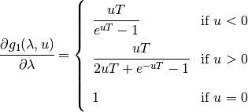
The acceptance probability for a time-flip proposal from a time-variable event to a time-constant event is
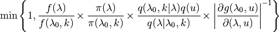
16.3. Time-flip proposal options¶
The frequency in which a time-flip proposal occurs,
relative to other proposals, is given by updateRateLambdaTimeMode
and updateRateBetaTimeMode for the diversification
and phenotypic evolution models, respectively.
When a new event is added to the tree, the probability that it is time-variable
is defined by lambdaIsTimeVariablePrior (or betaIsTimeVariablePrior).
If the probability that an event is time-variable is between 0 and 1,
the initial root event is assumed to be time-constant if lambdaShift0 is 0;
otherwise, it is time-variable.
A similar assumption is made for betaShiftInit.
To constrain BAMM such that all diversification shifts lead to time-varying processes only, set:
lambdaIsTimeVariablePrior = 1
updateRateLambdaTimeMode = 0
To constrain BAMM such that all diversification shifts lead to time-constant diversification processes only, set:
lambdaIsTimeVariablePrior = 0
updateRateLambdaTimeMode = 0
lambdaShift0 = 0
Make similar adjustments to the corresponding beta options for the phenotypic evolution model type.